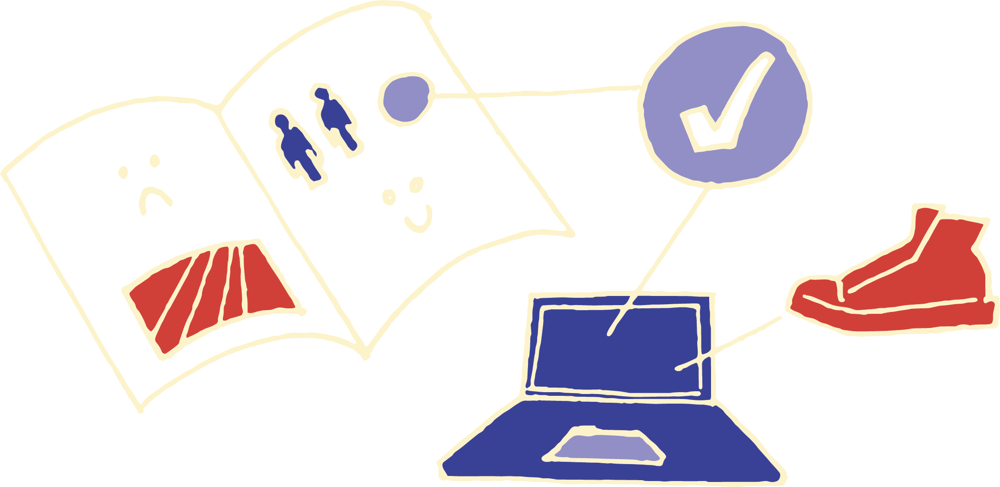
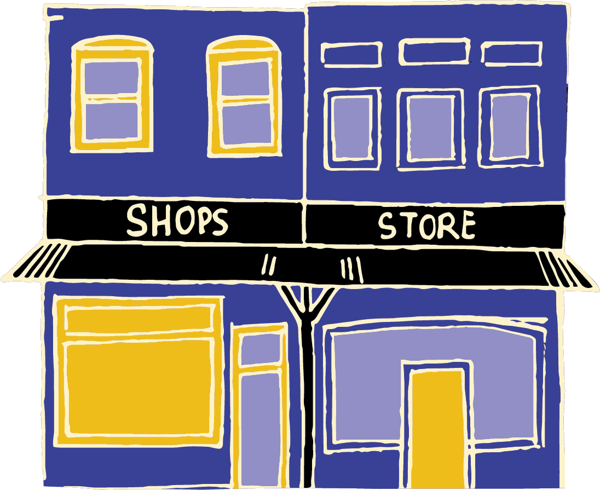
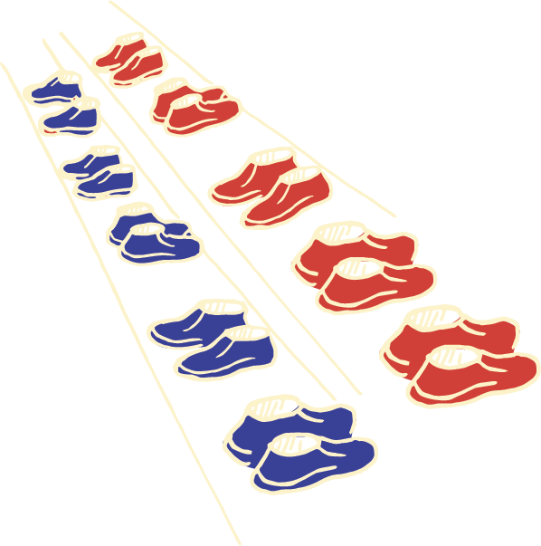
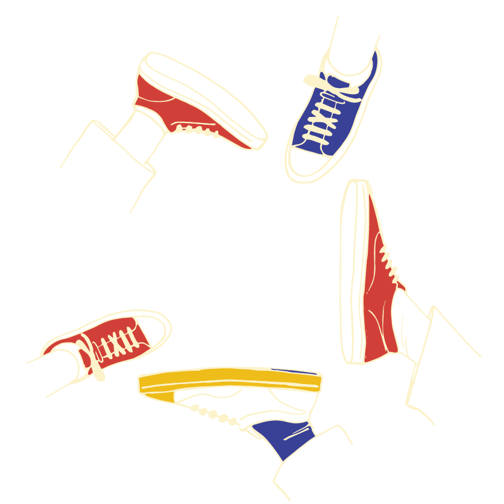
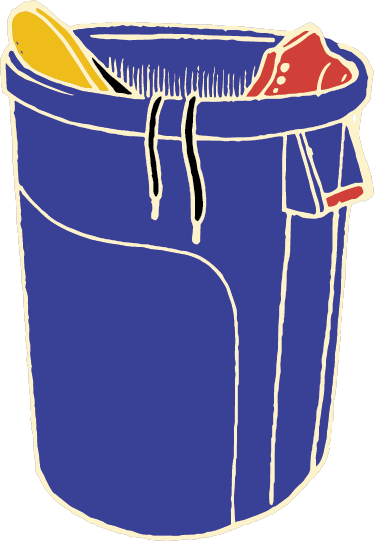
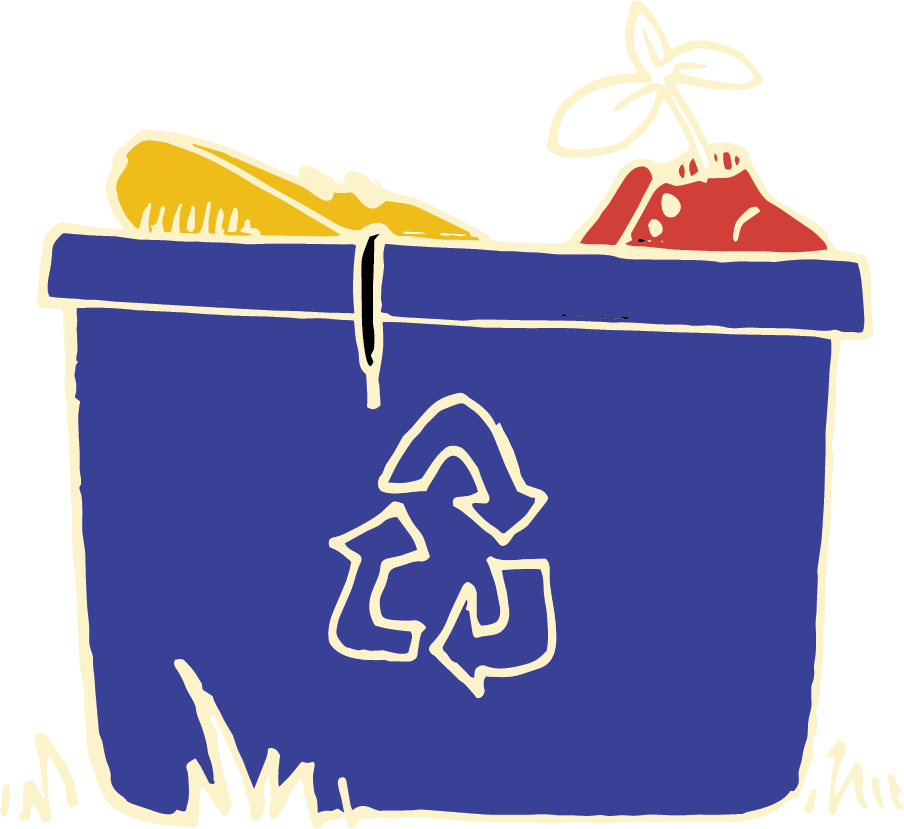
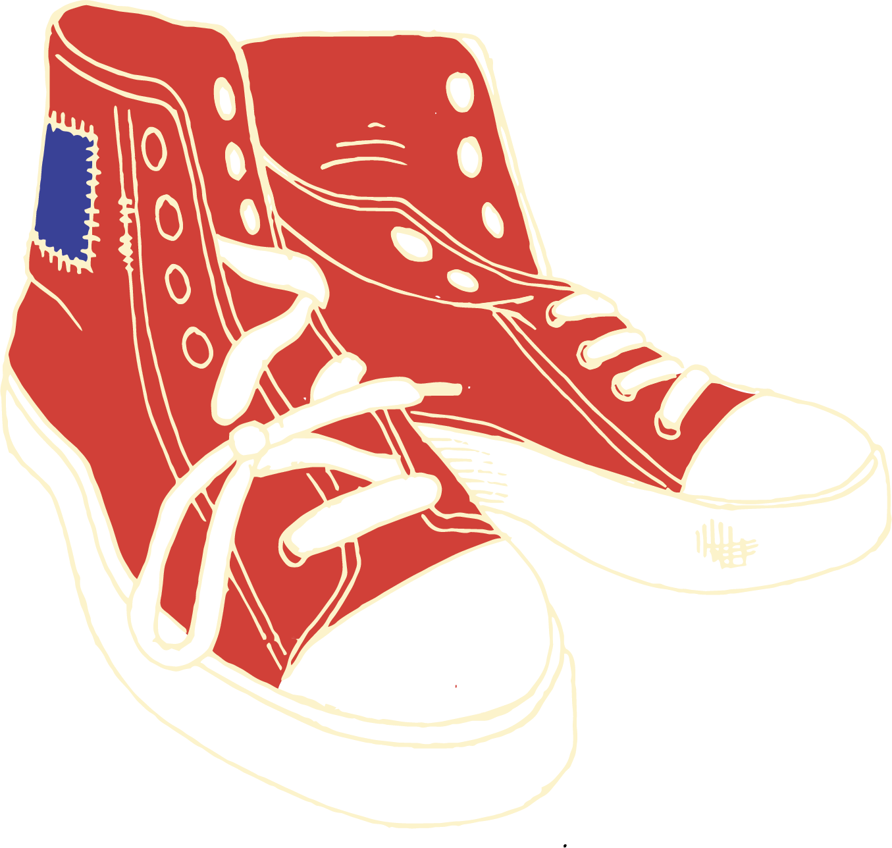

Cradle to Grave
The Life of Our Shoes

click the shoe to find out more
From raw material to landfill and everything inbetween
Cradle to Grave
click the shoe to find out more
From raw material to landfill and everything inbetween


Workers exposed to wood dust from the rubber tree without correct protection experience increased risk of nasal symptoms, wheeze, asthma and skin symptoms and have reduced spirometric lung function.
tearfund.org.nz — Footwear: An Industry Laced With ExploitationThe entirety of the manufacturing process, which includes material sourcing, production, transportation, and packaging, pumps millions of tons of CO2 into the atmosphere every year.
myfleeters.com — Shoe Industry Impact on Planet HealthMost shoe companies use cheap labour, shipping from warehouses based primarily in China, Indonesia, and India and then often sent to the U.S. for global distribution.
nautilusshipping.com — The World’s Major Maritime Trade RoutesAccording to Airportwatch and a DEFRA report, two tonnes of freight carried 1,000km by container ship produces just 30kg of CO2. For comparison: 42kg by diesel train, and a staggering 4,138kg by air.
accelleron.com — The Real Environmental Impact of Freight ShippingThe shift toward fast fashion and synthetic materials like cheap polyurethane, EVA, and blended plastics has drastically reduced modern shoe durability compared to traditional leather and rubber construction.
textiletoday.com.bd — Non-Leather Footwear ExportRunners regularly logged 800 to 1,000 kilometres on a single pair of durable daily trainers.
rundna.com.au — Running Shoe DurabilityHigh-performance “super shoes” can even degrade after 350 kilometres.
doingfootwear.com — How Long Do Shoes Last?An estimated 22 billion pairs of shoes are sent to landfill annually. 90% of shoes produced each year will eventually end up in landfill, many within the first 12 months of purchase.
bootrepaircompany.co.uk — The Landfill Crisis Under Our FeetHeavily synthetic materials like foamed rubber soles and certain plastics can take anywhere from 50 to over 1,000 years to fully degrade, leaching chemicals and microplastics into the environment.
refash.in — Decomposition of Landfill WasteBio-based synthetic rubber is eco-friendly, manufactured from renewable biomass inputs like sugarcane, corn, and forest waste, rather than fossil fuels. It produces a significantly lower carbon footprint while structurally matching petroleum-based synthetic rubbers.
vertecbiosolvents.com — The Rise of Biodegradable Bio-Based Synthetic RubbersRecycled rubber is a highly sustainable material created by processing scrap rubber, primarily from discarded vehicle tires. With companies like Ecoalf using exclusively recycled materials, including discarded rubber and ocean plastics to create their footwear.
thepost.co.nz — How Recycled Tyre Rubber Can HelpUntil the late 1980s, about 95 per cent of footwear in New Zealand was made locally. Today nearly 90 per cent of the world’s shoes are made in Asia. Companies that still manufacture footwear in Aotearoa are small and specialised.
tearfund.org.nz — Footwear: An Industry Laced With ExploitationLook up different brand’s labour and environmental ratings on the Good on You Directory, which evaluates brands based on their impact on people, the planet, and animals.
directory.goodonyou.eco — Good on You DirectoryA typical pair of conventional sneakers generates about 13.6 kg of greenhouse gas emissions during its lifecycle. Making any sustainable choice is a step towards more conscious consumption.
sgs.com — What is the Environmental Footprint of Your Shoe?Buying locally benefits the environment primarily by slashing transportation emissions, reducing excessive packaging waste, and supporting your community. This shortens the supply chain, allowing communities to lower their overall ecological footprint.
letzbarefoot.com — Sustainability in the Footwear Industry


Workers exposed to wood dust from the rubber tree without correct protection experience increased risk of nasal symptoms, wheeze, asthma and skin symptoms and have reduced spirometric lung function.
skip this step
Buy recycled or bio rubber
Many companies use developing countries to manufacture their products, like Nike, Adidas, and Skechers. Most shoe companies state publically that they commit to paying a living wage, though none do. A quarter of companies reported not knowing where any of their inputs came from. 56% of companies didnt know where any of their raw materials came from, creating a disconnect. Relying on forced labour and mass sweat shops.
make a change
Check labour rights
The entirety of the manufacturing process, which includes material sourcing, production, transportation, and packaging, pumps millions of tons of CO2 into the atmosphere every year. Most shoe companies use cheap labour, shipping from warehouses based primarily in China, Indonesia, and India and then often sent to the U.S. for global distribution. According to Airportwatch and a DEFRA report, two tonnes of freight carried 1,000km by container ship produces 30kg of CO2, 42kg by diesel train, and a staggering 4,138kg by air.
or
Bio-based synthetic rubber is eco-friendly, manufactured from renewable biomass inputs like sugarcane, corn, and forest waste, rather than fossil fuels. It produces a significantly lower carbon footprint while structurally matching petroleum-based synthetic rubbers. Synthesised rubber tend to be more common in the footwear industry than natural rubber, creating a great but underused alternative.
Recycled rubber is a highly sustainable material created by processing scrap rubber, primarily from discarded vehicle tires. Through shredding, grinding, and bonding, it is repurposed into versatile, eco-friendly products. It helps reduce landfill waste. With companies like Ecoalf using exclusively recycled materials, including discarded rubber and ocean plastics to create their footwear.
or





Until the late 1980s, about 95 per cent of footwear in New Zealand was made locally. This began to change with the embrace of free trade and reduced import taxes. Today nearly 90 per cent of the world's shoes are made in Asia. Companies that still manufacture footwear in Aotearoa are small and specialised.
Unfortunately, most larger companies tend to have long complex supply chains which are likely to contain serious issues. Look up different brand's labour and environmental ratings on the Good on You Directory, this evaluates brands based on their impact on people, the planet, and animals, helping you make more sustainable choices.
or
Buying locally benefits the environment primarily by slashing transportation emissions, reducing excessive packaging waste, and supporting your community. This shortens the supply chain, allowing communities to lower their overall ecological footprint while fostering transparent production practice. Global manufacturing hubs often lack strict environmental oversight. Purchasing from local or at least domestic companies, shops and brands can ensure better compliance with higher labor rights and safer, non-toxic production standards, heavily reducing carbon emissions due to less back-and-forth transit.




The shift toward fast fashion and synthetic materials like cheap polyurethane, EVA, and blended plastics has drastically reduced modern shoe durability compared to traditional leather and rubber construction. These unsustainable materials break down rapidly, lack resoling capabilities, and contribute to immense textile waste. Shoes 30 years ago were intended to last almost three times longer.
or
An estimated 22 billion pairs of shoes are sent to landfill annually. 90% of shoes produced each year will eventually end up in landfill, many within the first 12 months of purchase. Heavily synthetic materials like foamed rubber soles and certain plastics can take anywhere from 50 to over 1,000 years to fully degrade, leaching chemicals and microplastics into the environment. This is the average life cycle of the shoes we buy.
Donating your old shoes is more than just a sustainable choice, it is an opportunity to make a positive impact on your community, stepping closer towards a circular economy. By extending the lifespan of your footwear, you reduce landfill waste, save money on frequent replacements, and help reduce initial physical discomfort. Secondhand shoes often encourage customisation, letting colour and imagination thrive.
A typical pair of conventional sneakers generates about 13.6 kg of greenhouse gas emissions during its lifecycle. Making any sustainable choice is a step towards more conscious consumption, helping to reduce this. Purchasing higher-quality, more considered, and durable shoes will last years longer than fast-fashion alternatives. This directly prevents dozens of pairs from entering landfills over your lifetime. Choosing more biodegradable shoe components will allow for natural decomposition at the end of their lifecycle, leaving behind zero toxic microplastics or permanent waste.
scroll to continue →